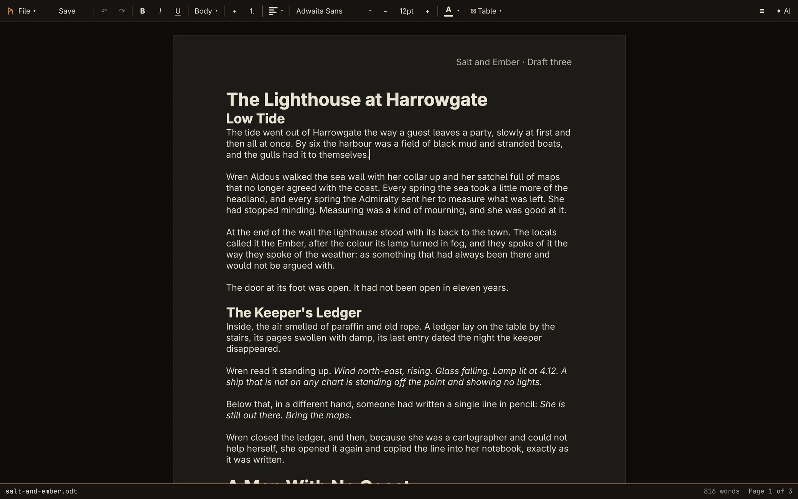

Guide
The Rune Guide
How to write with Rune, from opening your first file to a cited paper or a finished manuscript.


Getting started
Install Rune, find your way around the window, and open and save files.
Writing and formatting
Text styles, headings, lists, fonts, colour and tables.
Pages, headers and footers
Paper and margins, headers and footers, page numbers.
Writing with the AI
Sign in, then let the AI correct, rewrite or draft in your document.
Writing a book
Chapters and scenes, the outline, and story notes.
Citations and bibliography
Sources, BibTeX, citing as you write, and a bibliography that keeps up.
Commands and shortcuts
The command palette and every keyboard shortcut.
New to Rune?
Start with Getting started, then Writing with the AI: the AI is what Rune is built around. If you only remember one shortcut, make it Ctrl+K, which finds any command by name.
Rune is young and moving fast. What it can't do yet is listed honestly on the roadmap, and the guide says so where a limit is likely to catch you.